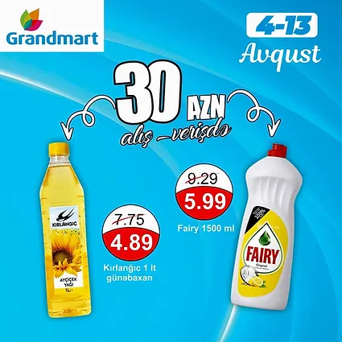

“Qarabağın Azərbaycan torpağı olduğunu anlatmaq üçün daha təsirli addımlar atmaq lazım gələcək” - ŞƏRH + FOTO
daha cox melumat ucun daxil olun
BMT Təhlükəsizlik Şurasında Qarabağla bağlı dinləmə mənə ötən əsrin 90-cı illərinin əvvəlində, hələ SSRİ-nin dağılmadığı dönəmdəki vəziyyəti xatırlatdı. Daha dəqiqi ABŞ və Rusiya təmsilçilərinin çıxışları belə təəssürat yaradırdı
Son iki ayda suda boğulma ilə bağlı 47 müraciət daxil olub
elave melumat ucun
"Nikosayağı" ilə qəzada ölən Ruslanın ailəsi arasında dava düşüb? - AÇIQLAMA
Azərbaycan pərakəndə bazarında 20 ilə yaxındır fəaliyyət göstərən Grandmart supermarketlər şəbəkəsi hazırda 30-dan yuxarı filialla müştərilərin ixtiyarındadır.

.jpg) daha cox melumat ucun daxil olun
daha cox melumat ucun daxil olun
.jpg) elave melumat ucun
elave melumat ucun